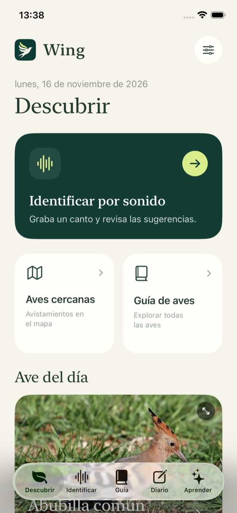
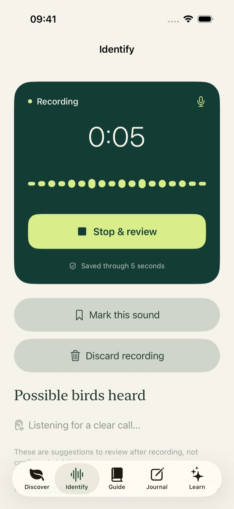

Listen and discover
Record a song and review suggested species. Sound analysis runs on your device.
Put a name to what you hear. Discover the birds around you and turn an everyday walk into a little expedition.
Discover WingComing to the App Store · For iPhone

From the first sound of the morning to that bird at your window. Wing helps you get to know them a little better.
Record a song and review suggested species. Sound analysis runs on your device.
Explore a species guide and find nearby observations on the map.
Build your sightings journal and practice recognizing more birds next time.
A quiet experience designed to join you outdoors. Open Wing, listen for a moment and see where your curiosity takes you.


Try Wing’s features and decide if it belongs on your next walk.
Coming to the App Store · For iPhone
7-day free trial
Reference price in Spain, including tax. In other countries, App Store’s local price applies. Trial for eligible users only. Then automatically renews annually until canceled. Cancel at least 24 hours before renewal in Apple subscriptions. Reminder delivery depends on iOS and your settings.
Wing analyzes sound clips on your device and suggests possible species. It does not need to send the recording to an AI service. Suggestions can be wrong: check the bird’s appearance, location and behavior.
Sound identification and content already available on your device can work offline. Nearby observations, maps, images and other remote content may require Internet access.
Yes. The annual plan offers a 7-day trial for users eligible under App Store rules. It then renews at the annual price confirmed by Apple unless canceled. A subscription is required to access the features.
Allow notifications in Wing. During an active trial expected to renew, a local reminder is scheduled 48 hours before it ends. iOS and your settings control delivery. You can cancel through Apple without waiting for a reminder.
In iOS Settings → your name → Subscriptions, manage or cancel your plan. To prevent renewal, cancel at least 24 hours before it ends. Use “Restore purchases” in Wing with the same Apple account to recover valid access.
Email info@legal-assistant-ai.com with the subject “Wing support”.
.jpg){kind=link}